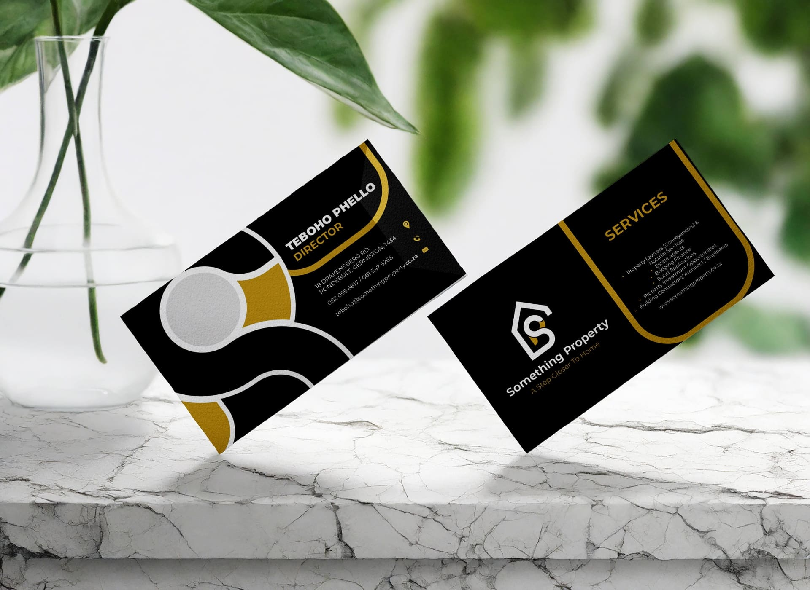

PackagingFeatured
Portfolio archive
Selected Work.
Three featured client projects spanning brand identity, packaging and corporate stationery — each built from a brief into a complete visual system.
4
Projects
4
Industries
3+
Years active
Brand IdentityWeb DesignCreative DirectionPackagingMotion DesignDigital Campaigns
Spotlight · 001
Brand · Packaging · Web — 2024
Momo's Hair Corner.
A children's salon for mothers raising African princesses. I translated a hand-drawn client sketch into a playful, proudly African brand system — spanning logo, packaging, signage, social and a website.
- ClientMomo's Hair Corner
- SectorBeauty · Kids
- ScopeBrand · Packaging · Web
- Year2024
Spotlight · 002
Logo · Brand Identity — 2024
Nelo Pharmacy.
A community pharmacy where care meets convenience. The client reviewed three directions — a teal capsule wordmark and a cool blue mortar emblem — before landing on a warm orange-and-green circular mark that balances clinical trust with herbal warmth.
- ClientNelo Pharmacy
- SectorHealthcare
- ScopeLogo · Identity · Collateral
- Year2024
Spotlight · 003
Logo · Corporate Stationery — Lime Marketing
Something Property.
A black-and-gold real estate identity built around a monogram where the letter S and a hidden gold P share the same house — security, warmth and unity compressed into a single mark. Designed in-house at Lime Marketing across logo, stationery, apparel and signage.
- ClientSomething Property
- SectorReal Estate
- ScopeLogo · Stationery · Signage
- AgencyLime Marketing
Spotlight · 004
Creative Direction · Streetwear — 2023 → Ongoing
KlevaBari.
A Soweto streetwear brand built on an oxymoron — Kleva (streetwise) fused with Bari (bookish). Co-founded with Morena Mabeta; I lead creative direction, graphics and colourway across every drop. La S'phuma Khona.
- BrandKlevaBari
- SectorStreetwear · Lifestyle
- RoleCreative Director · Co-founder
- Since2023 →
Sort
Showing 4 projects


BrandingFeatured


StreetwearFeatured

BrandingFeatured
Want a closer look at a specific project?
Detailed case studies are available on request. Or read the full Momo's Hair Corner story — from client sketch to full brand system.